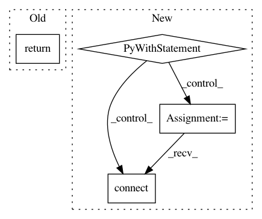

0548aad44b5138ea0bbc96ef8964b986bebcb589,lib/streamlit/watcher/EventBasedFileWatcher.py,_FolderEventHandler,add_file_change_listener,#_FolderEventHandler#Any#Any#,212
Before Change
if file_path in self._watched_files:
LOGGER.debug("Already watching file: %s", file_path)
return
md5 = util.calc_md5_with_blocking_retries(file_path)
modification_time = os.stat(file_path).st_mtime
After Change
callback : Callable
with self._lock:
watched_file = self._watched_files.get(file_path, None)
if watched_file is None:
md5 = util.calc_md5_with_blocking_retries(file_path)
modification_time = os.stat(file_path).st_mtime
watched_file = WatchedFile(
md5=md5, modification_time=modification_time)
self._watched_files[file_path] = watched_file
watched_file.on_file_changed.connect(callback, weak=False)
def remove_file_change_listener(self, file_path, callback):
Remove a file from this object"s event filter.
Parameters
In pattern: SUPERPATTERN
Frequency: 3
Non-data size: 4
Instances
Project Name: streamlit/streamlit
Commit Name: 0548aad44b5138ea0bbc96ef8964b986bebcb589
Time: 2019-06-18
Author: tconkling@gmail.com
File Name: lib/streamlit/watcher/EventBasedFileWatcher.py
Class Name: _FolderEventHandler
Method Name: add_file_change_listener
Project Name: streamlit/streamlit
Commit Name: e0e9d7350826c7d968e48181cea38bde23942c30
Time: 2019-06-19
Author: tconkling@gmail.com
File Name: lib/streamlit/watcher/EventBasedFileWatcher.py
Class Name: _FolderEventHandler
Method Name: add_file_change_listener
Project Name: maxpumperla/elephas
Commit Name: c9aca7047d5d556d539e15e9f1694eafb4c1d931
Time: 2021-01-12
Author: danielenricocahall@gmail.com
File Name: elephas/parameter/client.py
Class Name: SocketClient
Method Name: get_parameters